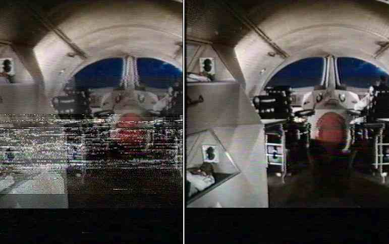
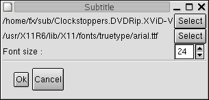

|
Видео 1.Режим Process/Copy В этом режиме avidemux копирует входной видео поток на выход без изменений. Есть исключение : при экспорте в *VCD, видео устанавливается в режим process.
Avidemux сначала распакует видео на YV12 фреймы, применит указанные фильтры, затем закодирует снова выбранным видео кодеком. 2.Мета-фильтры Мета-фильтр это группа фильтров или фильтр, модифицирующий другие фильтры. Вот некоторые из них :
3.Фильтры для работы с изображением Этот фильтр обрезает размер кадра (например для удаления черных бордюров). Значения left/right/top/bottom должны быть четными. Вы можете посмотреть предварительные результаты обрезания используя кнопку update . На качественном материале (dvd), можно попробовать кнопку Autopcrop. 
Этот фильтр предназначен для изменения размеров кадра. Алгоритм позаимствован из avisynth . Доступны два метода (эквиваленты bilinear/bicubic). Фильтр заменяет существующие бордюры в видео на чисто-черные. Используется для замены зашумленных полос на чистые (например в оцифрованом с VHS ролике) Этот фильтр *добавляет* черные бордюры (предыдущий заменял). Используется при подготовке *VCD для изменения размера кадра без изменения значения соотношения сторон (aspect ratio). Переворачивает изображение "вверх ногами". Такое изображение дают некоторые карты захвата. Фильтр авторства "Tracy" Поворачивает изображение на 90/180/270 градусов. Автор использует его для обработки видео с камеры, работающей в портретном режиме.
4.Interlacing related filters
Это порт фильтра от Donaldа Graftа - "smart-deinterlace filter to YV12" Обнаруживает чересстрочные кадры и производит сглаживание. Фильтр имеет два параметра : Этот фильтр берет первое поле из одного кадра и второе из следующего. Некоторые фильмы (и некоторые DVD) имеют чересстрочное изображение такого типа. Этот фильтр не делает никаких проверок, поэтому прежде чем применять его, убедитесь в корректности его работы с помощью "preview". Этот фильтр что-то среднее между двумя предыдущими. Он сравнивает текущую картинку и после применения "Pal-shift" , выбирает вариант с меньшим искажением и применяет "smart deinterlace". Т.к. цвет в этом процессе не учавствует, цветовые искажения минимальны. Работает медленно, но очень эффективно на качественном видео. Может быть использован также как простой способ для IVTC (Inverse Telecine), т.к. реконструирует прогрессивность кадров, но не удаляет кадры для преобразования 30fps в 24. Фильтр написал Ron Reithoffer. Если строки в соседних кадрах сильно отличаются (выпадающие строки в VHS) они заменяются усредненными значениями, вычисленными на основе строк из предыдущих и последующих кадров. Автор утверждает, что этот фильтр должен быть первым в цепочке фильтров, но не очень хорошо работает с чересстрочным материалом.  5.Convolution Kernel based filters Эти фильтры замещают каждый пиксель его усредненным значением, вычисленным на матрице 3x3 (исключая "Large median", который использует матрицу 5x5 ). Они могут работать с яркостью и/или цветностью. Median и Mean используют только цветность и очень показательны на материалах с большим уровнем цветового шума (записанного с VCR или TV). 6.Luma/Chroma filters Меняет местами цветовые составляющие (такое изображение дают некоторые карты захвата). Этот фильтр линейно изменяет контрастность/яркость для яркостного и/или цветовых каналов. Поможет "выровнять" слишком яркое/темное/синее/красное видео.
Фильтр для отладки. Выделяет только одну компоненту (luma/u/v). 7.Smoother filters Фильтр замещает каждый пиксел, перешедший условия порога усредненным по времени и в пространстве относительно окружения. Фильтр портирован из transcode (DNR filter) Порог для яркости/контрастности выставляется раздельно. Фильт портирован из avisynth, оригинал написал Ross Thomas . Детали можно узнать из документации на avisynth Оригинальный фильтр написал Jim Casaburi для virtual dub . После Vlad59 портировал его для avisynth . Подробности в документации на virtual dub/avisynth 8.Misc Фильтр добавляет субтитры текстового формата srt/sub из файла Вы можете выбрать шрифт и размер.  |